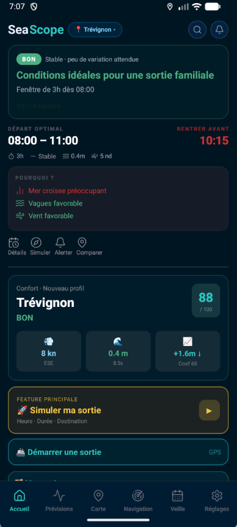
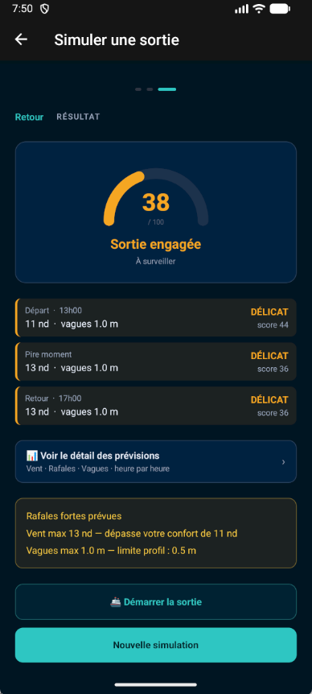

Décidez quand sortir en mer
en toute confiance.
SeaScope transforme les conditions météo en recommandations concrètes, adaptées à votre façon de naviguer. Quand sortir, quand rentrer, et avec quel niveau de confiance.

Trop de données.
Pas assez de décision.
Avant chaque sortie, on jongle entre trois applis météo, des modèles qui ne s'accordent pas, et l'intuition. La décision finale repose sur la fatigue d'un dimanche matin.
Trois gestes.
Une décision claire.
SeaScope vous demande l'essentiel — votre spot, votre pratique — puis renvoie un signal décisionnel, pas un dump de données.
Choisissez votre spot.
Trévignon, Quiberon, Glénan, ou n'importe quel point GPS. Vos spots préférés sont mémorisés.
SeaScope analyse les conditions.
Fusion de plusieurs modèles météo marins, croisée avec les seuils de votre profil de navigation.
Obtenez votre signal.
Une recommandation tranchée — meilleure fenêtre, heure de retour, niveau adapté à votre pratique.
SeaScope s'adapte à votre
façon de naviguer.
Mêmes conditions, recommandations différentes. Vos seuils, votre pratique et votre tolérance définissent ce qui vous est confortable — et ce qui ne l'est pas.

Sur cette sortie, vos seuils disent DÉLICAT.
SeaScope a comparé le départ, le pire moment et le retour à vos limites personnelles. Vent trop fort par rafales, mer dans le profil mais à la limite. Le score traduit ce que vous savez déjà — sans avoir à le calculer.
- Vos limites personnelles, pas des moyennes anonymes.
- Chaque dépassement nommé, chiffré, expliqué.
- Un score qui change avec votre profil — pas avec le marketing.
Mêmes conditions. Trois verdicts.
Trévignon · 14 août · 09h — Vent 14 nd ESE, vagues 1.0 m, rafales 15 nd. Vos réglages ci-dessus changent la recommandation.
Une décision n'a de valeur
que si on peut la défendre.
Pas de boîte noire, pas de cloud personnel, pas de score marketing. Chaque recommandation est traçable jusqu'aux chiffres qui l'ont produite.
Fusion multi-sources
Plusieurs modèles météo marins — ARPEGE, ICON-EU, GFS, WaveWatch — agrégés et pondérés selon leur fiabilité locale.
Recommandations explicables
Chaque score affiche les seuils dépassés, les modèles utilisés et le niveau d'incertitude. Vous voyez ce qu'on vous dit.
Personnalisation réelle
Vos limites de vent, vagues et rafales définissent le BON. Pas un seuil moyen pour navigateur moyen.
Logique transparente
Un score, trois moments (départ, pire, retour), des raisons nommées. Aucune magie, aucun algorithme secret.
Stockage local
Vos préférences, vos spots, vos sorties — sur votre appareil. Pas de profil cloud, pas de revente.
Alertes utiles
Un signal seulement quand la fenêtre s'ouvre — ou quand la mer se referme. Pas de notification pour le bruit.
Candidatez à la beta fermée.
La beta est limitée. On sélectionne sur la diversité des pratiques et des zones de navigation, pas sur l'ancienneté. Quelques questions pour cadrer votre profil.
La beta sert à affûter
les recommandations réelles.
On ne cherche pas à valider une démo. On cherche à valider une décision : est-ce que SeaScope a vu juste cette fois ? Vos retours terrain font évoluer la pondération des modèles, les seuils par profil, et la façon dont on formule un signal.
L'objectif n'est pas une appli météo de plus. C'est un vrai copilote de décision — entraîné avec vous.
Envoyez un retour terrain.
Une recommandation qui ne collait pas ? Un bug ? Une donnée manquante ? Ce formulaire va directement à l'équipe produit. Chaque retour est traité — pas archivé.